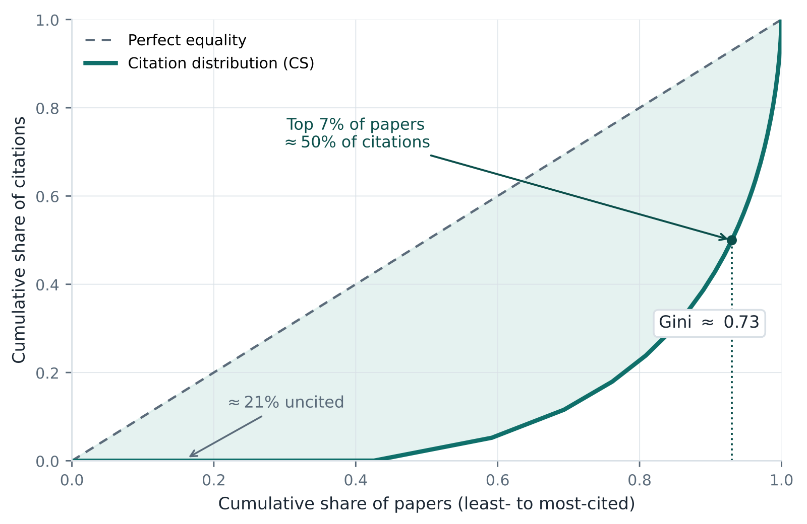

Home › Progress Documents › Proposal
Proposal body: … / 800 words
Team Members: Shih, Cheng-Jhih; Kim, Jeonghwan; Park, Christopher Y.; Pyo, Jaechan; Zhang, Haoming
Assigned Mentor: Alexandra Wu · Submission Date: 06/16/2026 · "Outstanding Project" Award opt-in: Yes
1. Introduction & Background
The number of citations a paper accrues is a widely used — if imperfect — proxy for scientific influence [1]. Citation dynamics are extremely skewed: in computer science, the most-cited 7% of papers collect over half of all citations while roughly 21% go uncited (Gini ≈ 0.73, Fig. 1) [7] — a concentration that has intensified as AI publication volume has surged [2], [6]. With thousands of AI papers posted monthly, it is hard to tell early which work will matter; a model that forecasts impact at publication could help researchers, reviewers, and libraries surface promising papers before citations accumulate, and reveal which characteristics drive attention. Text alone is a weak predictor — the strongest text-based models leave most of the variance unexplained [8] — while bibliometric and metadata signals available near publication add substantial predictive power [1]. We study citation prediction for AI/ML papers — a fast-moving field with a large, openly catalogued literature — and use feature-importance analysis to learn which signals actually drive predicted impact, rather than assuming them in advance.
Dataset
We assemble the dataset from open sources requiring no API keys: a HuggingFace arXiv
corpus (CShorten/ML-ArXiv-Papers) provides titles, abstracts, authors, and dates, which we
enrich with citation counts and affiliations from OpenAlex [3] (key-free REST API,
batched by arXiv ID/DOI). We restrict to AI/ML categories (cs.LG, cs.CL, cs.CV) and sample ~50,000
papers from 2018–2022 so citations have had time to mature.
Data (all key-free): huggingface.co/datasets/CShorten/ML-ArXiv-Papers · openalex.org

2. Problem Definition
Problem. Given features describing a scientific paper at publication time (title, abstract, venue, author count, reference count, field, year), predict its fixed-window citation count — a regression task. We will also study a binary framing: whether a paper becomes "highly cited" (top decile of fixed-window citations within its field/year).
Motivation. Reliable early estimates of impact could help readers, libraries, and reviewers triage a fast-growing literature, and analyzing the trained model reveals which paper characteristics most influence eventual citations. Modeling impact also exposes the biases baked into citation counts, which we treat as an object of study rather than ground truth. Time permitting (stretch goal): we will extend the analysis to recent papers, characterizing how predicted impact tracks emerging topics, and test whether these factors generalize beyond AI/ML literature.
3. Methods
Data Preprocessing
We will:
- build text features from the title and abstract with TF-IDF (
TfidfVectorizer) and compress them via Truncated SVD (TruncatedSVD); - engineer and scale metadata features — author count, reference count, title/abstract length, field, publication year, and frequency-encoded venue — with
StandardScaler; - log-transform the heavily skewed target,
y = log(1 + citations), so models are not dominated by a few outliers; and - use a temporal train/test split (train on earlier years, test on later) to prevent leakage and mimic real forecasting.
All pipelines use scikit-learn [5].
Unsupervised Learning
On the assembled feature vectors we run (i) K-Means clustering to surface "impact archetypes" and inspect how fixed-window citation outcomes differ across clusters, with the silhouette score selecting k, and (ii) UMAP / t-SNE to visualize the resulting clusters and citation patterns in two dimensions. This both characterizes the data and informs feature engineering for the supervised stage.
Supervised Learning
We train three regressors of increasing capacity — Ridge Regression (interpretable baseline), Random Forest, and gradient-boosted trees (XGBoost) [4] — to predict fixed-window log-citations, which are compared head-to-head. We use feature-importance and SHAP analysis and feature-ablation experiments to identify which signals most influence predictions; strongly predictive metadata features will be examined further in follow-up analyses. The same features feed a Logistic Regression / gradient-boosting classifier for the binary "highly cited" framing.
4. (Potential) Results & Discussion
We will report RMSE, MAE, and R² on log-citations, plus Spearman rank correlation. Because our goal is to surface promising papers, we also report ranking metrics including Precision@10%, Recall@10%, and NDCG@10%. The binary framing adds ROC-AUC, PR-AUC and F1, and clustering uses the silhouette score. Beyond accuracy, SHAP and feature-ablation analyses are themselves results: they show which paper characteristics most shape predicted impact and where the model's predictability comes from.
Ethics & Sustainability
Citation counts contain known biases related to venue prestige, field size, and demographic effects. We therefore interpret predictions descriptively rather than as measures of scientific merit. Because our analysis is observational, reported feature effects should be viewed as associations rather than causal relationships. The models train in minutes on CPU, keeping computational cost and energy use low.
5. References
- R. Yan, J. Tang, X. Liu, D. Shan, and X. Li, "Citation Count Prediction: Learning to Estimate Future Citations for Literature," in Proc. 20th ACM Int. Conf. on Information and Knowledge Management (CIKM), 2011, pp. 1247–1252.
- D. Wang, C. Song, and A.-L. Barabási, "Quantifying Long-Term Scientific Impact," Science, vol. 342, no. 6154, pp. 127–132, 2013.
- J. Priem, H. Piwowar, and R. Orr, "OpenAlex: A Fully-Open Index of Scholarly Works, Authors, Venues, Institutions, and Concepts," arXiv preprint arXiv:2205.01833, 2022.
- T. Chen and C. Guestrin, "XGBoost: A Scalable Tree Boosting System," in Proc. 22nd ACM SIGKDD Int. Conf. Knowledge Discovery and Data Mining, 2016, pp. 785–794.
- F. Pedregosa et al., "Scikit-learn: Machine Learning in Python," J. Machine Learning Research, vol. 12, pp. 2825–2830, 2011.
- S. Fortunato et al., "Science of Science," Science, vol. 359, no. 6379, eaao0185, 2018.
- M. Franceschet, "The Skewness of Computer Science," Information Processing & Management, vol. 47, no. 1, pp. 117–124, 2011.
- M. M. van Dongen, G. Maillette de Buy Wenniger, and L. Schomaker, "SChuBERT: Scholarly Document Chunks with BERT-encoding Boost Citation Count Prediction," in Proc. First Workshop on Scholarly Document Processing, 2020, pp. 148–157.
Gantt Chart
Planned responsibilities on the actual Summer 2026 course calendar (week = Monday start date). The Proposal preparation band mirrors the Contribution Table below; the Project execution band covers the work through the final report. A bar split into colored segments means the task is shared by several members. ◆ = milestone.
| Task | W25/25 | W36/1 | W46/8 | W56/15 | W66/22 | W76/29 | W87/6 | W97/13 | W107/20 | W117/27 |
|---|---|---|---|---|---|---|---|---|---|---|
| Proposal preparation — due 6/19 (Week 5) | ||||||||||
| ALL Team formation & project scoping | ||||||||||
| JP Introduction, background & literature review | ||||||||||
| CS Problem definition & dataset selection | ||||||||||
| JKHZ Methods | ||||||||||
| HZ (Potential) results & discussion | ||||||||||
| CS Ethics & sustainability | ||||||||||
| CSHZ References (IEEE) | ||||||||||
| JK Gantt chart | ||||||||||
| CP Presentation, video creation & recording | ||||||||||
| ALL Proposal writing & peer review | ||||||||||
| ◆ Proposal due (6/19) | ||||||||||
| Project execution | ||||||||||
| CS Data collection (OpenAlex) & cleaning | ||||||||||
| CSJK Feature engineering + log-target + EDA | ||||||||||
| JK Unsupervised: impact-archetype clustering | ||||||||||
| HZ Supervised: Ridge / RF / XGBoost regression | ||||||||||
| JPHZ Midterm report | ||||||||||
| ◆ Midterm report due (7/10) | ||||||||||
| HZCP Tuning & evaluation (RMSE / R² / Spearman) | ||||||||||
| JK Stretch: recent-papers trend analysis | ||||||||||
| CPJP Final report + video + repo | ||||||||||
| ◆ Final report due (7/28) | ||||||||||
Contribution Table
| Name | Proposal Contributions |
|---|---|
| Shih, Cheng-Jhih | Problem definition, dataset selection, ethics & sustainability, references, proposal writing, review |
| Kim, Jeonghwan | Gantt chart, methods, proposal writing, review |
| Park, Christopher Y. | Presentation, video creation, recording, review |
| Pyo, Jaechan | Introduction, background, literature review, proposal writing, review |
| Zhang, Haoming | Methods, references, potential results, discussion, proposal writing, review |